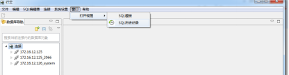
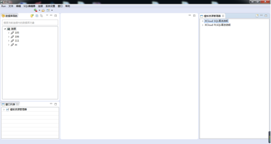
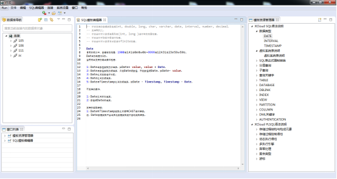
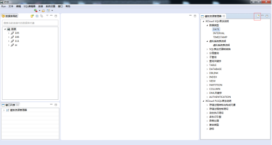
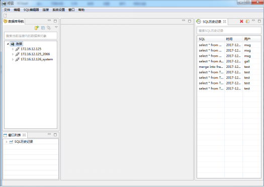
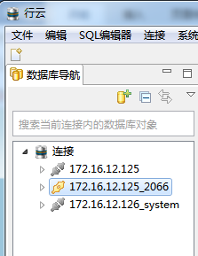
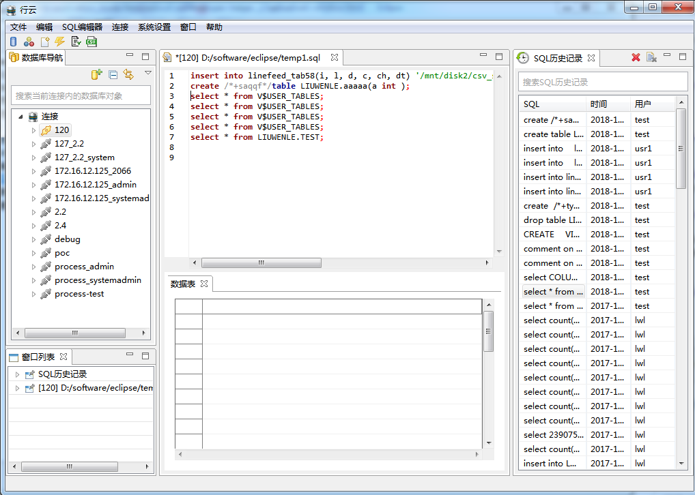
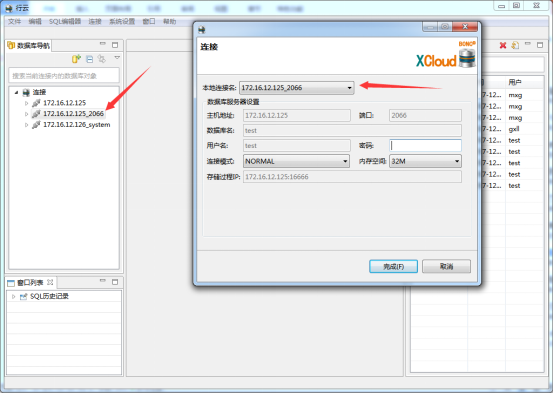
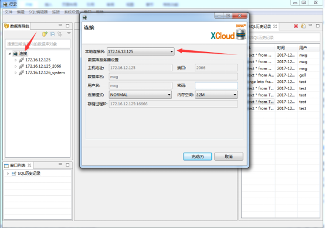
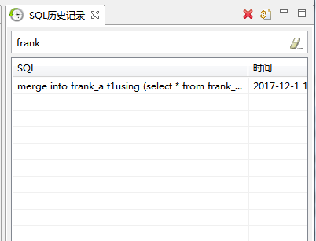

1) 打开SQL Developer管理平台，通过点击窗口中的SQL模板

2) SQL模板视图

3) 双击或者拖拽SQL模板树的叶子结点会将对应模板内容放到SQL编辑器中(该操作不需要连接行云数据库）

4) 点击模板树右侧的新建菜单可以新建一个SQL模板编辑器，用户可通过拖拽或双击将模板内容添加到编辑器中

1) 打开SQL Developer管理平台，通过点击窗口中的SQL历史记录打开SQL历史记录视图：
2) SQL历史记录视图：

3) 通过SQL历史纪录视图将SQL语句还原到SQL编辑器中：
① 如果没有已经连接成功的连接，并且在数据库导航栏中光标处于改连接成功的的连接上时：

在SQL历史纪录的视图中选中一条SQL语句，通过双击或右键打开的方式将SQL语句还原到SQL
一个默认的编辑器中，如果已存在打开的编辑器，则会将SQL语句还原到目前打开并且活动的编辑
器中：

② 如果没有连接成功的连接，在SQL历史纪录的视图中选中一条SQL语句，通过双击或右键打开会先弹出登陆窗口，

可以通过“本地连接名”，选取想要连接的连接，如果有鼠标选中连接，登陆窗口的“本地连接名”
处默认为当前所选；如果有鼠标没有选中连接，登陆窗口的“本地连接名”处默认为连接列表中的
第一个连接：

③ 如果已存在打开的SQL编辑器，也可以通过拖拽的方式将SQL语句还原到SQL编辑器中；
④ 选中一条SQL语句，通过右键删除或SQL历史记录的工具栏删除按钮，可以将选中的SQL语句从历史记录中删除（删除不需要连接）；
⑤ 通过右键清除或SQL历史记录的工具栏清除按钮，可以清空SQL历史记录（清除不需要连接）；
⑥ 在SQL历史纪录视图中的搜素栏中，输入查询的关键字，按回车键通过模糊查询的方式查询相关的SQL历史纪录：
